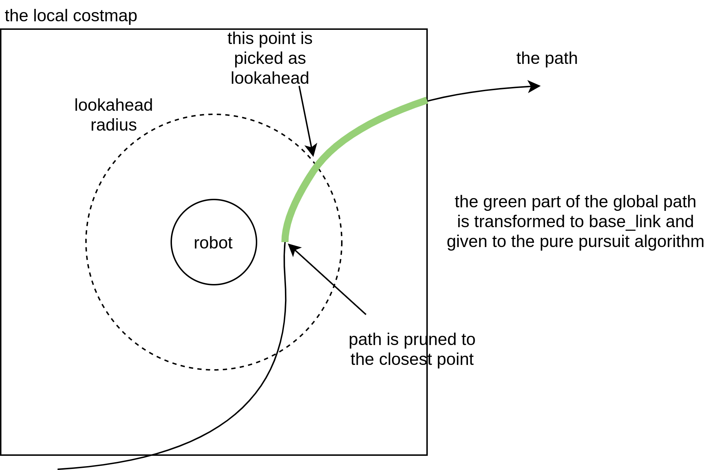

datetime:2024/03/14 16:53
author:nzb
导航
https://github.com/ros-planning/navigation2.git
分支：humble
节点：3ed4c2d

控制器服务
nav2_controller｜ 控制器服务nav2_dwb_controller| DWB控制器，Nav2控制器的一个实现nav2_regulated_pure_pursuit_controller| 纯追踪控制器，Nav2控制器的一个实现nav2_rotation_shim_controller| 旋转控制器nav2_collision_monitor｜ 额外的碰撞检测，包括减速区，停止区等等，可以看对应包的README.md，后期需要可以深入学习
| 插件 | 描述 | 支持的机器人类型 |
|---|---|---|
| nav2_dwb_controller | 基于DWA的可高度配置的实现，并提供插件接口 | 差分式、全向式、腿足式 |
| TEB Controller | 一个类似MPC的控制器，适用于阿克曼式、差分式和具备完整约束的机器人。 | 阿克曼式（Ackermann）、腿足式、全向式、差分式 |
| nav2_regulated_pure_pursuit_controller | 针对服务/工业机器人在追踪算法的基础上增加了自适应性。 | 阿克曼式（Ackermann）、腿足式、差分式 |
| nav2_rotation_shim_controller | 在主控制器进行路径跟踪之前， "shim" 控制器负责将机器人旋转到路径的方向。 | 差速式，全向式、模型旋转到位 |
nav2_controller
控制服务
ControllerServer：控制服务器，继承于
nav2_util::LifecycleNode，该类托管不同算法的各种插件，从公开的FollowPath操作服务器完成控制任务。重要属性
// The controller needs a costmap node, 代价地图相关 std::shared_ptr<nav2_costmap_2d::Costmap2DROS> costmap_ros_; std::unique_ptr<nav2_util::NodeThread> costmap_thread_; // Publishers and subscribers std::unique_ptr<nav_2d_utils::OdomSubscriber> odom_sub_; odom订阅 rclcpp_lifecycle::LifecyclePublisher<geometry_msgs::msg::Twist>::SharedPtr vel_publisher_; 速度发布 rclcpp::Subscription<nav2_msgs::msg::SpeedLimit>::SharedPtr speed_limit_sub_; 限速订阅 // Progress Checker Plugin 进度检查插件 pluginlib::ClassLoader<nav2_core::ProgressChecker> progress_checker_loader_; 进度检查插件加载器 nav2_core::ProgressChecker::Ptr progress_checker_; 速度检查 std::string default_progress_checker_id_; std::string default_progress_checker_type_; std::string progress_checker_id_; std::string progress_checker_type_; // Goal Checker Plugin 目标检查插件 pluginlib::ClassLoader<nav2_core::GoalChecker> goal_checker_loader_; 目标检查插件加载器 GoalCheckerMap goal_checkers_; 目标检查插件Map std::vector<std::string> default_goal_checker_ids_; std::vector<std::string> default_goal_checker_types_; std::vector<std::string> goal_checker_ids_; std::vector<std::string> goal_checker_types_; std::string goal_checker_ids_concat_, current_goal_checker_; // Controller Plugins 控制器插件 pluginlib::ClassLoader<nav2_core::Controller> lp_loader_; 控制器插件加载器 ControllerMap controllers_; 控制器插件Map std::vector<std::string> default_ids_; std::vector<std::string> default_types_; std::vector<std::string> controller_ids_; std::vector<std::string> controller_types_; std::string controller_ids_concat_, current_controller_;ControllerServer：构造函数- 节点名称
controller_server - 初始化加载器和属性
progress_checker_loader_("nav2_core", "nav2_core::ProgressChecker")goal_checker_loader_("nav2_core", "nav2_core::GoalChecker")lp_loader_("nav2_core", "nav2_core::Controller")default_progress_checker_type_->nav2_controller::SimpleProgressCheckerdefault_goal_checker_types_->nav2_controller::SimpleGoalCheckerdefault_types_->dwb_core::DWBLocalPlanner
- 初始化节点参数
controller_frequency->20.0progress_checker_plugin->progress_checkergoal_checker_plugins->goal_checkercontroller_plugins->FollowPathmin_x_velocity_threshold->0.0001min_y_velocity_threshold->0.0001min_theta_velocity_threshold->0.0001speed_limit_topic->speed_limitfailure_tolerance->0.0
- 创建代价地图节点：
costmap_ros_ = std::make_shared<nav2_costmap_2d::Costmap2DROS>("local_costmap",...)
- 节点名称
on_configure：配置控制器插件，代价地图，初始化odom订阅，速度发布和follow path动作服务- 调用
get_parameter获取目标检测、进度检查，控制器插件，并调用declare_parameter_if_not_declared设置参数 - 获取节点相关参数
costmap_ros_->configure()-> 单独启一个线程跑代价地图节点costmap_thread_ = std::make_unique<nav2_util::NodeThread>(costmap_ros_)- 查询和创建进度检查实例，并调用实例
progress_checker_->initialize - 查询和创建目标检查实例，并调用实例
goal_checker_->initialize，并保存到相关Map中 - 查询和创建控制器实例，并调用实例
controller->configure，并保存到相关Map中 - 创建
odom话题订阅odom_sub_ = std::make_unique<nav_2d_utils::OdomSubscriber>(node) - 创建
cmd_vel话题订阅vel_publisher_ = create_publisher<geometry_msgs::msg::Twist>("cmd_vel", 1) - 创建动作服务
action_server_ = std::make_unique<ActionServer>(shared_from_this(),"follow_path",...)，绑定computeControl - 创建限速话题订阅
speed_limit_sub_ = create_subscription<nav2_msgs::msg::SpeedLimit>(speed_limit_topic,...)，绑定speedLimitCallback
- 调用
on_activate：激活控制器，代价地图，速度发布和动作服务costmap_ros_->activate(),vel_publisher_->on_activate(),action_server_->activate()- 遍历控制器插件调用插件的
activate - 绑定参数变更回调，创建连接
createBond()
on_deactivate：取消激活动作服务，控制器，代价地图和速度发布，调用之前，速度设置为0action_server_->deactivate()- 遍历控制器插件调用插件的
deactivate costmap_ros_->deactivate()- 调用
publishZeroVelocity()，使机器人停下来 vel_publisher_->on_deactivate()dyn_params_handler_.reset()destroyBond()
on_cleanup：控制器和代价地图清理，其余变量重置on_shutdown：节点关闭computeControl：FollowPath动作服务回调函数，处理操作和更新直到到达目标位置，接收到全局路径。 使用控制器以指定的速率计算并发布机器人的扭转速度，直到达到目标。- 调用
findControllerId,findGoalCheckerId - 调用
setPlannerPath(action_server_->get_current_goal()->path);progress_checker_->reset() - 以
controller_frequency_频率循环控制- 动作服务为空或未激活直接返回
- 收到取消请求，调用
publishZeroVelocity()，然后直接返回 while循环等待代价地图直到有效- 调用
updateGlobalPath() - 调用
computeAndPublishVelocity() - 如果
isGoalReached()，控制结束，跳出循环 - 如果出错，调用
publishZeroVelocity()，并结束动作，然后直接返回
- 控制成功，调用
publishZeroVelocity()，动作成功
- 调用
findControllerId：根据请求的名称查询有效的控制器ID名称findGoalCheckerId：根据请求的参数查询有效的目标检测ID名称setPlannerPath：设置规划路径- 调用控制插件：
controllers_[current_controller_]->setPlan(path) - 重置目标检测：
goal_checkers_[current_goal_checker_]->reset()
- 调用控制插件：
computeAndPublishVelocity：计算速度并发布cmd_vel话题- 获取校验机器人位姿和目标位姿失败，失败抛错
- 获取
odom数据：twist = getThresholdedTwist(odom_sub_->getTwist()) - 调用控制插件计算速度：
cmd_vel_2d = controllers_[current_controller_]->computeVelocityCommands(pose,...) - 反馈信息更新
feedback->speed = std::hypot(cmd_vel_2d.twist.linear.x, cmd_vel_2d.twist.linear.y)feedback->distance_to_goal = nav2_util::geometry_utils::calculate_path_length(current_path_, find_closest_pose_idx())
- 发布反馈
action_server_->publish_feedback(feedback) - 发布速度
publishVelocity(cmd_vel_2d)
updateGlobalPath：收到新的路径调用setPlannerPath更新路径- 调用
findControllerId()和findGoalCheckerId()，更新当前控制插件和目标检查插件 - 调用
setPlannerPath(goal->path)
- 调用
publishVelocity：调用速度发布器发布cmd_vel话题，话题激活并且有订阅者，调用vel_publisher_->publish(std::move(cmd_vel)发布publishZeroVelocity：调用速度发布器发布0速度，所有参数设置为0，然后调用publishVelocity(velocity)isGoalReached：目标是否到达- 调用
getRobotPose(pose)获取机器人位姿 - 调用
twist = getThresholdedTwist(odom_sub_->getTwist())获取odom信息 - 调用
nav_2d_utils::transformPose(costmap_ros_->getTfBuffer(), costmap_ros_->getGlobalFrameID(), end_pose_,...) - 检查是否到达调用
goal_checkers_[current_goal_checker_]->isGoalReached(pose.pose, transformed_end_pose.pose, velocity)
- 调用
getRobotPose：获取机器人当前位姿，调用costmap_ros_->getRobotPose(current_pose)getThresholdedVelocity：获取单个速度阈值(std::abs(velocity) > threshold) ? velocity : 0.0getThresholdedTwist：获取Twist速度阈值，依次调用getThresholdedVelocitydynamicParametersCallback：参数变更回调speedLimitCallback：速度限制回调，遍历控制插件，调用插件实例的setSpeedLimit()
控制相关插件
进度检查插件
- SimpleProgressChecker：用于检查机器人的位置以确保它实际上正在朝着目标前进，继承于
nav2_core::ProgressCheckerinitialize：重写函数- 调用
declare_parameter_if_not_declared和get_parameter_or初始化声明和获取节点参数plugin_name + ".required_movement_radius"->0.5plugin_name + ".movement_time_allowance"->10.0
- 绑定参数回调
dynamicParametersCallback
- 调用
check：重写函数- 如果
!baseline_pose_set_) || (isRobotMovedEnough(current_pose2d)-> 调用resetBaselinePose(current_pose2d) - 否则查看是否超时
- 如果
reset：重写函数，baseline_pose_set_ = false;isRobotMovedEnough：根据基线姿势计算机器人运动，调用pose_distance(pose, baseline_pose_) > radius_resetBaselinePose：使用机器人的当前姿势重置基线姿势，第一次直接重置，后续没经过required_movement_radius重置更新基线位姿pose_distance：两点距离dynamicParametersCallback：参数变更回调
- PoseProgressChecker：用于检查机器人的位置和角度，以确保它实际上正在朝着目标前进或旋转，继承于
SimpleProgressCheckerinitialize：重写函数- 调用父类
SimpleProgressChecker::initialize(parent, plugin_name) - 调用
declare_parameter_if_not_declared和get_parameter_or初始化声明和获取节点参数plugin_name + ".required_movement_angle"->0.5
- 绑定参数回调
dynamicParametersCallback
- 调用父类
check：重写函数，同父类isRobotMovedEnough：根据基线姿势计算机器人运动， 调用pose_distance(pose, baseline_pose_) > radius_ || poseAngleDistance(pose, baseline_pose_) > required_movement_angle_poseAngleDistance：检查角度abs(angles::shortest_angular_distance(pose1.theta, pose2.theta))dynamicParametersCallback：参数变更回调
到达目标位置检查插件
- SimpleGoalChecker：仅检查位置差异的目标检查器插件，继承于
nav2_core::GoalCheckerinitialize：重写函数- 调用
declare_parameter_if_not_declared和get_parameter_or初始化声明和获取节点参数plugin_name + ".xy_goal_tolerance"->0.25plugin_name + ".yaw_goal_tolerance"->0.25plugin_name + ".stateful"->true
- 绑定参数回调
dynamicParametersCallback
- 调用
reset：重写函数，check_xy_ = trueisGoalReached：重写函数- 查询点到目标点距离是否小于
xy_goal_tolerance**2，小于表示进入xy容错范围窗口，不在检查xy - 后续继续检查角度是否满足
- 查询点到目标点距离是否小于
getTolerances：重写函数，赋值位置容错值并返回，速度相关赋值最小值dynamicParametersCallback：参数变更回调
- StoppedGoalChecker：目标检查器插件，用于检查位置差和速度，继承于
SimpleGoalCheckerinitialize：重写函数- 调用父类
SimpleGoalChecker::initialize(parent, plugin_name, costmap_ros) - 调用
declare_parameter_if_not_declared和get_parameter_or初始化声明和获取节点参数- 旋转速度：
plugin_name + ".rot_stopped_velocity"->0.25 - 移动速度：
plugin_name + ".trans_stopped_velocity"->0.25
- 旋转速度：
- 绑定参数回调
dynamicParametersCallback
- 调用父类
isGoalReached：重写函数- 先调用父类
SimpleGoalChecker::isGoalReached(query_pose, goal_pose, velocity)，false直接返回 - 否则检查
fabs(velocity.angular.z) <= rot_stopped_velocity_ && hypot(velocity.linear.x, velocity.linear.y) <= trans_stopped_velocity_
- 先调用父类
getTolerances：重写函数，调用父类getTolerances，然后赋值速度容错值并返回dynamicParametersCallback：参数变更回调
nav2_dwb_controller
DWB 控制器是 ROS1 中基本局部规划器（base local planner）和 DWA 控制器的后继者。它是由 David Lu 在 Locus Robotics
公司作为 robot_navigation 项目的一部分在 ROS 1 中创建的。然后，它被移植到 ROS 2 中，用作 Nav2 中的基于评论的控制器算法。
DWA（Dynamic Window Approach）算法是一种用于移动机器人局部路径规划的算法，它基于预测控制理论，能够在未知环境中安全有效地避开障碍物。
DWA算法的核心思想是根据机器人的当前位置状态和速度状态，在速度空间中确定一个满足机器人硬件约束的采样速度空间。
然后，算法会计算机器人在这些速度下移动一定时间内的轨迹，并通过评价函数对这些轨迹进行评价。最后，算法选择评价最优的轨迹所对应的速度作为机器人的运动速度，循环这个过程直到机器人到达目标点。
DWA算法的主要步骤包括：
- 速度采样：考虑机器人的最大速度、最小速度、加速度和减速度的限制，确定机器人能够实际达到的速度范围。
- 轨迹预测（推算）：在速度空间中采样多组速度，并模拟这些速度在一定时间内的运动轨迹。
- 轨迹评价：通过一个评价函数对模拟的轨迹进行评价，该函数一般考虑方位角、障碍物距离和线速度等因素。
- 选择最优轨迹：选择评价最优的轨迹所对应的速度来驱动机器人运动。
DWA算法的特点包括计算复杂度低、实时避障能力强、适用于两轮差分和全向移动模型，但不适用于阿克曼模型。它的缺点是前瞻性不足，只能模拟并评价下一步的轨迹，而不是全局最优路径。 在ROS（Robot Operating System）中，DWA算法被用于局部路径规划，结合全局路径规划信息，为机器人规划具体的行动策略。
DWB 在几个重要方面对 DWA 进行了改进：
- 它实现了基于插件的评论器（
critic），允许用户指定新的评论函数来在系统中使用。这些评论器可以动态重新配置、重新加权和调整，以获得在机器人系统中非常特定的行为。 - 它实现了基于插件的轨迹生成技术，使用户可以以任意方式生成轨迹，适用于任意类型的车辆。
- 包括许多常见用途的插件实现。
可以调整 DWB 以获得 DWA 和基本局部规划器行为，也可以通过新插件扩展到完全特定用例的行为。当前的轨迹生成器插件适用于全向和差分驱动机器人，尽管添加 阿克曼式（Ackermann）
生成器将是微不足道的。当前的评论器插件适用于圆形和非圆形机器人，并包括构建具有各种属性的路径跟踪系统所需的许多成本函数。
DWB 插件
DWB 通过插件的使用进行高度配置。有三种类型的插件用于：
- 轨迹生成器插件：这些插件生成应由评论器评估的可能轨迹集。得分最高的轨迹确定输出的命令速度。
Navigation 2提供了两种轨迹生成器。一次只能加载一个。StandardTrajectoryGenerator- 这类似于ROS 1中的base_local_planner中使用的轨迹滚动算法。LimitedAccelGenerator- 这类似于ROS 1中使用的DWA。
- 评论器插件：这些插件根据轨迹生成器生成的轨迹进行评分。可以加载多个插件，其得分之和确定了选择的命令速度。
BaseObstacle- 根据路径通过的代价地图上的位置对轨迹进行评分。要正确使用这个插件，必须使用代价地图中的膨胀层，将障碍物扩展到机器人的半径范围内。ObstacleFootprint- 根据验证机器人轮廓中的所有点是否触碰代价地图中标记的障碍物来对轨迹进行评分。GoalAlign- 根据轨迹与目标姿态的对齐程度对轨迹进行评分。GoalDist- 根据轨迹使机器人靠近目标姿态的程度对轨迹进行评分。PathAlign- 根据轨迹与全局规划器提供的路径的对齐程度对轨迹进行评分。PathDist- 根据轨迹距离全局规划器提供的路径的距离对轨迹进行评分。PreferForward- 更高分的轨迹是将机器人前进的轨迹。RotateToGoal- 只有当机器人足够靠近目标位置时，才允许机器人旋转到目标方向。Oscillation- 防止机器人只是前后移动。Twirling- 防止全向机器人在前往目标的过程中旋转。
dwb_core
异常类
- PlannerTFException：当规划器由于
TF错误而无法完成其操作时抛出，继承于nav2_core::PlannerException - IllegalTrajectoryException：当评论者之一遇到致命错误时抛出，继承于
nav2_core::PlannerExceptiongetCriticName：获取评论者名称
- PlannerTFException：当规划器由于
辅助函数
- getClosestPose：找到轨迹中具有特定时间
time_offset的位姿 - projectPose：通过在现有姿势之间进行线性插值来创建具有精确
time_offset的位姿
- getClosestPose：找到轨迹中具有特定时间
非法轨迹跟踪工具
- IllegalTrajectoryTracker：非法轨迹跟踪器类
addIllegalTrajectory：添加非法轨迹计数addLegalTrajectory：添加合法轨迹计数getPercentages：获取非法轨迹百分比getMessage：获取合法和非法轨迹数量字符串
- NoLegalTrajectoriesException：当所有探索的轨迹都不合法时抛出的异常类，继承于
nav2_core::PlannerException
- IllegalTrajectoryTracker：非法轨迹跟踪器类
轨迹相关类
- TrajectoryGenerator：用于迭代可能的速度并创建轨迹的接口(元类)
- 此类定义了两个独立但相关组件的插件接口，这两个组件都严重依赖于机器人的运动学模型，并且可以共享许多参数，这就是为什么它们被分组到一个类中的原因
- 一个迭代器接口，用于探索给定当前速度时要搜索的所有速度
- 一个独立的接口，用于从扭矩创建轨迹，即将其在时间和空间中投射出来
TrajectoryGenerator：构造函数initialize：纯虚函数，初始化所需的参数reset：startNewIteration：纯虚函数，基于当前速度开始新迭代hasMoreTwists：纯虚函数，是否还有更多的刚体运动(速度)nextTwist：纯虚函数，获取下一个刚体运动(速度)，并进行迭代getTwists：获得迭代的所有刚体运动(速度)。注意：如果迭代器正在处理中，则重置迭代器- 调用
startNewIteration - 循环调用
hasMoreTwists，调用twists.push_back(nextTwist())加入数组，最后返回
- 调用
generateTrajectory：纯虚函数，根据给定机器人坐标系中的cmd_vel和初始条件，生成Trajectory2DsetSpeedLimit：纯虚函数，设置机器人最大的线速度
- 此类定义了两个独立但相关组件的插件接口，这两个组件都严重依赖于机器人的运动学模型，并且可以共享许多参数，这就是为什么它们被分组到一个类中的原因
- TrajectoryCritic：轨迹评论者类，评估
Trajectory2D以生成分数- 定义了
TrajectoryCritic的插件接口，用于给轨迹打分，其中较低的数字更好，但负分被视为无效。 一般的生命周期如下initialize在开始时调用一次，它反过来调用onInit。派生类可以重写onInit来根据需要加载参数。prepare在每组轨迹之前调用一次。假设有多个我们想要评估的轨迹，并且可能有一些共享的工作可以在评估每个单独的轨迹之前进行优化。scoreTrajectory每个轨迹调用一次，并返回分数。debrief在每组轨迹之后调用，带有选择的轨迹。这可以用于监视轨迹通过时间的有状态评判者。- 可选项，对于某些类型的评判者，还有一种调试机制在
addCriticVisualization方法中。如果轨迹的分数取决于它与成本地图的关系，addCriticVisualization可以向dwb_core提供该信息，dwb_core将其发布为PointCloud2的网格分数。
initialize：初始化轨迹评论者- 初始化参数
dwb_plugin_name_ + "." + name_ + ".scale"->1.0- 调用
onInit()
- 初始化参数
onInit：reset：重置评论者状态，当规划收到一个新的全局规划时，会被调用，这可以用于丢弃一个特定的规划信息prepare：在评估任何轨迹之前，请查看所有轨迹中恒定的上下文信息，派生类可能会重写，如果有错返回falsescoreTrajectory：返回轨迹原始评分，分数小于0，无效，比如碰撞，这是原始分数，缩放不会应用到它上debrief：汇报告诉批评者所选择的cmd_vel是什么（如果它关心的话）addCriticVisualization：虚函数，将给定的点云信息添加到用于调试成本地图网格分数的指定点云中getName：获取轨迹评论者名称getScale：获取缩放setScale：设置缩放
- 定义了
- DWBPublisher：
DWB本地规划器所有发布逻辑的整合。- 发布包括以下
- 全局规划（通过
setPath传入） - 本地规划（在计算后）
- 转换后的全局规划（因为它可能与全局规划不同）
- 完整的本地规划评估
- 表示不同评估轨迹的标记
- 成本网格（以复杂的
PointCloud2形式）
- 全局规划（通过
DWBPublisher：构造函数on_configure：- 初始化声明和获取参数
plugin_name_ + ".publish_evaluation"->trueplugin_name_ + ".publish_global_plan"->trueplugin_name_ + ".publish_transformed_plan"->trueplugin_name_ + ".publish_local_plan"->trueplugin_name_ + ".publish_local_plan"->trueplugin_name_ + ".publish_trajectories"->trueplugin_name_ + ".publish_cost_grid_pc"->falseplugin_name_ + ".marker_lifetime"->0.1
- 创建上述话题发布实例
- 初始化声明和获取参数
on_activate：调用发布器的on_activateon_deactivate：调用发布器的on_deactivateon_cleanup：调用发布器的resetshouldRecordEvaluation：发布者是否要求保存LocalPlanEvaluationpublishEvaluation：完整的本地规划评估publish_evaluation_ && eval_pub_->get_subscription_count() > 0为真，则调用publish发布评估话题- 然后调用
publishTrajectories
publishLocalPlan(const std_msgs::msg::Header & header, const dwb_msgs::msg::Trajectory2D & traj)：本地规划（在计算后）- 调用
nav_2d_utils::poses2DToPath - 然后调用对应的话题实例的
publish
- 调用
publishCostGrid：发布成本网格，具体查看代码publishGlobalPlan：全局规划（通过setPath传入），调用publishGenericPlanpublishTransformedPlan：发布转换后的全局规划，调用publishGenericPlanpublishLocalPlan(const nav_2d_msgs::msg::Path2D plan)：完整的本地规划评估，调用publishGenericPlanpublishTrajectories：表示不同评估轨迹的标记，组装相关数据，然后调用对应的话题实例的publishpublishGenericPlan：发布通用规划，根据传入的发布实例和标识发布规划
- 发布包括以下
- DWBLocalPlanner：
DWB局部规划，基于插件的灵活控制器，继承于nav2_core::ControllerDWBLocalPlanner：构造函数configure：- 初始化声明配置参数
dwb_plugin_name_ + ".critics"->rclcpp::PARAMETER_STRING_ARRAYdwb_plugin_name_ + ".default_critic_namespaces"->std::vector<std::string>())dwb_plugin_name_ + ".prune_plan"->truedwb_plugin_name_ + ".prune_distance"->2.0dwb_plugin_name_ + ".forward_prune_distance"->2.0dwb_plugin_name_ + ".debug_trajectory_details"->falsedwb_plugin_name_ + ".trajectory_generator_name"->dwb_plugins::StandardTrajectoryGeneratordwb_plugin_name_ + ".transform_tolerance"->0.1dwb_plugin_name_ + ".shorten_transformed_plan"->truedwb_plugin_name_ + ".short_circuit_trajectory_evaluation"->true
- 创建发布实例
pub_ = std::make_unique<DWBPublisher>(node, dwb_plugin_name_)-> 并配置pub_->on_configure() - 创建轨迹生成插件实例
traj_generator_ = traj_gen_loader_.createUniqueInstance(traj_generator_name)-> 并初始化traj_generator_->initialize(node, dwb_plugin_name_) - 调用
loadCritics()
- 初始化声明配置参数
activate：调用DWBPublisher的on_activatedeactivate：调用DWBPublisher的on_deactivatecleanup：调用DWBPublisher的on_cleanupsetPlan：设置全局规划- 调用
path2d = nav_2d_utils::pathToPath2D(path) - 遍历评论家插件调用插件的
reset - 调用
traj_generator_->reset() - 发布路径调用
pub_->publishGlobalPlan(path2d)
- 调用
computeVelocityCommands：根据给定的速度和位姿，计算最佳的命令- 如果
pub_->shouldRecordEvaluation()，初始化msg - 调用第二个重载函数
cmd_vel2d = computeVelocityCommands - 发布评估
pub_->publishEvaluation(results) - 调用
nav_2d_utils::twist2Dto3D(cmd_vel2d.velocity)，返回速度结果
- 如果
scoreTrajectory：利用评论家给给定的轨迹命令打分- 遍历评论家
- 如果
critic->getScale() == 0.0跳过，下一个评论家 - 调用
critic_score = critic->scoreTrajectory(traj)打分 - 然后分数累加，如果累加分数打印最佳的分数，
break停止遍历评论，返回分数，再遍历评论无意义了
computeVelocityCommands：根据给定的速度和位姿，计算最佳的命令- 调用
prepareGlobalPlan - 遍历评论家，调用
critic->prepare - 调用
best = coreScoringAlgorithm获取最好的轨迹指令 - 组装返回值
cmd_vel - 遍历评论家，调用
critic->debrief - 发布：
pub_->publishLocalPlan(pose.header, best.traj) - 发布：
pub_->publishCostGrid(costmap_ros_, critics_)
- 调用
setSpeedLimit：设置最大线速度， 调用轨迹生成实例的TrajectoryGenerator::Ptr traj_generator_->setSpeedLimit(speed_limit, percentage)prepareGlobalPlan：相对于姿势变换全局规划（存储在global_plan_中的）并将其保存在transformed_plan中并可能发布它。 然后它采用最后一个姿势并将其转换以匹配本地成本图- 调用
transformGlobalPlan - 调用
nav_2d_utils::transformPose转换坐标
- 调用
coreScoringAlgorithm：迭代所有的刚体运动(twists)并找到最好的一个- 调用
traj_generator_->startNewIteration(velocity) traj_generator_->hasMoreTwists()开启while循环- 获取下一个
twist，调用twist = traj_generator_->nextTwist() - 生成轨迹，调用
traj = traj_generator_->generateTrajectory(pose, velocity, twist) - 打分，调用
score = scoreTrajectory(traj, best.total) - 添加到数组，设置最好和最差分数索引
- 出错打印日志抛错，否则返回最好的轨迹信息
- 获取下一个
- 调用
transformGlobalPlan：将全局规划转换为与给定姿态相同的坐标系，裁剪远处的姿态，可能修剪已经通过的姿态- 三个关键操作
- 将全局规划转换为给定姿态的坐标系
- 仅返回靠近机器人的姿态，即它们可能在本地代价地图上
- 如果
prune_plan_为true，则会从转换后的规划和保存的全局规划中移除已经通过的所有点。
- 在技术上，它会迭代到路径上与机器人距离小于
prune_distance_的姿态，并擦除之前的所有姿态。 - 此外，
shorten_transformed_plan_确定是否将完整规划传递到导航目标上，或者仅传递靠近机器人的一部分规划。True表示仅传递一部分。这给了DWB较少的自由来决定如何到达导航目标。- 相反，它被鼓励尝试进入全局规划生成的路径。
- 详细步骤
- 首先，它对传入的全局规划进行了一些基本的有效性检查，例如检查全局规划是否为空。
- 然后，它将机器人当前的姿态从机器人所在的坐标系转换为全局规划使用的坐标系。这一步确保了机器人当前的位置是以与全局规划相同的坐标系表示的。
- 接下来，它计算了两个阈值，用于决定要保留的全局规划的部分。其中一个阈值用于确定在机器人附近的规划部分，而另一个阈值用于确定机器人已经通过的规划部分。
- 随后，它根据这些阈值在全局规划中找到机器人附近的部分，并将其转换为机器人所在的坐标系。转换后的部分被存储在
transformed_plan中。 - 最后，根据是否启用了
prune_plan_，它可能会从全局规划中删除已经通过的部分，并将新的全局规划发布出去。 - 函数返回转换后的部分，以便后续的规划评估。
- 三个关键操作
resolveCriticClassName：尝试使用默认命名空间和后缀Critic解析可能缩短的评论家名称loadCritics：从命名空间加载评论家参数- 初始化声明评论家节点参数
- 获取插件类名
plugin_class = resolveCriticClassName(plugin_class) - 插件插件实例：
TrajectoryCritic::Ptr plugin = critic_loader_.createUniqueInstance(plugin_class) - 插件初始化
plugin->initialize
- TrajectoryGenerator：用于迭代可能的速度并创建轨迹的接口(元类)
轨迹生成器插件
- 运动学相关
- KinematicParameters：包含机器人运动学的一种表示的结构体
- KinematicsHandler：管理机器人运动学表示的类
KinematicsHandler：构造函数，new一个KinematicParameters数据initialize：初始化- 参数不存在则初始化声明节点参数，然后获取参数，设置运动学结构体
- 绑定参数变更回调
- 调用
update_kinematics(kinematics)
getKinematics：返回运动学结构体指针setSpeedLimit：设置速度限制，最后调用update_kinematics(kinematics)dynamicParametersCallback：参数变更回调update_kinematics：更新运动学信息，重新new一个KinematicParameters数据
速度迭代器
- projectVelocity：辅助内联函数，用于计算在给定初始条件和时间后的结束速度。
- OneDVelocityIterator：用于在给定范围内生成一系列速度样本的迭代器。主要用于在机器人运动控制中选择合适的速度。
OneDVelocityIterator：构造函数，根据给定的参数初始化迭代器，计算可达速度范围并确定样本数量getVelocity：获取当前迭代器位置的速度值。operator++：使迭代器前进到下一个速度样本reset：将迭代器重置到第一个速度样本isFinished：检查是否已经返回所有速度样本
- VelocityIterator：速度迭代器抽象类
initialize：纯虚函数，初始化startNewIteration：纯虚函数，开始新的迭代hasMoreTwists：纯虚函数，是否还有twistnextTwist：纯虚函数，下个twist
- XYThetaIterator：速度迭代器实现类，继承于
VelocityIteratorinitialize：重写函数- 入参
KinematicsHandler::Ptr kinematics_handler_ = kinematics - 初始化声明节点参数
plugin_name + ".vx_samples"->20plugin_name + ".vy_samples"->5plugin_name + ".vtheta_samples"->20
- 入参
startNewIteration：重写函数- 初始化
x迭代器x_it_ = std::make_shared<OneDVelocityIterator>(current_velocity.x,...) - 初始化
y迭代器y_it_ = std::make_shared<OneDVelocityIterator>(current_velocity.y,...) - 初始化
theta迭代器th_it_ = std::make_shared<OneDVelocityIterator>(current_velocity.theta,...) - 调用
isValidVelocity()，失败调用iterateToValidVelocity()
- 初始化
hasMoreTwists：重写函数，x_it_ && !x_it_->isFinished()nextTwist：重写函数，获取当前x/y/theta速度，调用iterateToValidVelocity()，最后返回获取的速度isValidSpeed：检查组合的x/y/theta速度是否有效，校验最小值最大值isValidVelocity：检查组合的x/y/theta速度是否有效，调用isValidSpeed(x_it_->getVelocity(), y_it_->getVelocity(), th_it_->getVelocity())iterateToValidVelocity：检查组合的x/y/theta速度是否有效- 调用
!valid && hasMoreTwists()是否需要开启while循环进行迭代 ++(*th_it_)th_it_->isFinished()->th_it_->reset()->++(*y_it_)y_it_->isFinished()->y_it_->reset()->++(*x_it_)
valid = isValidVelocity()
- 调用
轨迹生成类
- StandardTrajectoryGenerator：类似
DWA的标准轨迹生成器。继承于dwb_core::TrajectoryGeneratorinitialize：重写函数- 初始化
kinematics_handler_ = std::make_shared<KinematicsHandler>()->kinematics_handler_->initialize(nh, plugin_name_) - 调用
initializeIterator(nh) - 初始化声明参数
plugin_name + ".sim_time"->1.7plugin_name + ".discretize_by_time"->falseplugin_name + ".time_granularity"->0.5plugin_name + ".linear_granularity"->0.5plugin_name + ".angular_granularity"->0.025plugin_name + ".include_last_point"->true
- 初始化
startNewIteration：重写函数，调用velocity_iterator_->startNewIterationhasMoreTwists：重写函数，调用velocity_iterator_->hasMoreTwists()nextTwist：重写函数，调用velocity_iterator_->nextTwist()generateTrajectory：重写函数，仿真模拟生成轨迹- 调用
getTimeSteps获取时间步长 - 遍历时间步长
- 计算速度
vel = computeNewVelocity(cmd_vel, vel, dt) - 使用上面计算的速度计算新位置
pose = computeNewPosition(pose, vel, dt) - 添加轨迹点和时间偏移量，最后返回轨迹
- 计算速度
- 调用
setSpeedLimit：重写函数，调用kinematics_handler_->setSpeedLimitinitializeIterator：虚函数，初始化VelocityIterator指针。 放入自己的函数以便于覆盖- 初始化速度迭代器
velocity_iterator_ = std::make_shared<XYThetaIterator>() - 速度迭代器初始化
velocity_iterator_->initialize
- 初始化速度迭代器
computeNewVelocity：虚函数，给定所需的速度和加速度限制，计算一段设定时间后的速度，调用projectVelocitycomputeNewPosition：虚函数，使用机器人的运动学模型来预测机器人的新位置getTimeSteps：虚函数，计算生成轨迹中各点之间的时间增量数组。更新速度等相关参数生成轨迹所需的时间步长
- LimitedAccelGenerator：将生成轨迹的加速度限制为模拟时间的一小部分。继承于
StandardTrajectoryGeneratorinitialize- 调用
StandardTrajectoryGenerator::initialize - 初始化声明参数：
plugin_name + ".sim_period"->PARAMETER_DOUBLE
- 调用
startNewIteration：调用velocity_iterator_->startNewIterationcomputeNewVelocity：给定所需的速度和加速度限制，与StandardTrajectoryGenerator不同，LimitedAccelGenerator中的速度保持恒定，计算一段设定时间后的速度。return cmd_vel
- StandardTrajectoryGenerator：类似
评论器插件
评论家工具
- getForwardPose：函数，将给定姿势沿
x方向向前投影指定距离。 - getOrientedFootprint：函数，将足迹转换为以给定姿势为中心。
- getForwardPose：函数，将给定姿势沿
评论家
- BaseObstacleCritic：使用
costmap 2d来分配负成本，如果圆形机器人在轨迹的任何点都会碰撞。继承于dwb_core::TrajectoryCritic- 该类只能用于确定圆形机器人是否发生碰撞。如果与轨迹中的任何姿势对应的单元格是障碍物、内切障碍物或未知的，它将返回一个负成本。 否则，它将返回最终姿势的成本，或者所有姿势的总和，取决于
sum_scores参数。 - 其他类（如
ObstacleFootprintCritic）可以进行更高级的碰撞检查。 onInit：重写函数，初始化节点参数，为true累加评分：dwb_plugin_name_ + "." + name_ + ".sum_scores"->falsescoreTrajectory：重写函数，遍历传入的轨迹，调用scorePose，根据sum_scores计算分数addCriticVisualization：重写函数，代价可视化scorePose：- 调用
costmap_->worldToMap世界坐标转代价地图坐标 - 调用
cost = costmap_->getCost(cell_x, cell_y)获取代价 - 调用
isValidCost(cost)
- 调用
isValidCost：cost != nav2_costmap_2d::LETHAL_OBSTACLE && cost != nav2_costmap_2d::INSCRIBED_INFLATED_OBSTACLE && cost != nav2_costmap_2d::NO_INFORMATION;
- 该类只能用于确定圆形机器人是否发生碰撞。如果与轨迹中的任何姿势对应的单元格是障碍物、内切障碍物或未知的，它将返回一个负成本。 否则，它将返回最终姿势的成本，或者所有姿势的总和，取决于
- ObstacleFootprintCritic：继承于
BaseObstacleCritic，一个更健壮的类可以在不膨胀障碍物的情况下检查机器人足迹内的每个单元格，但会增加一些计算成本。prepare：重写函数，校验是否有footprintscorePose(const geometry_msgs::msg::Pose2D & pose)：重写函数- 转换坐标调用
costmap_->worldToMap - 然后调用
scorePose(pose, getOrientedFootprint(pose, footprint_spec_))
- 转换坐标调用
scorePose(const geometry_msgs::msg::Pose2D & pose, const Footprint & oriented_footprint)：虚函数- 遍历
footprint，调用costmap_->worldToMap，调用lineCost()获取线代价，返回最大的线代价
- 遍历
getScale：重写函数，return costmap_->getResolution() * scale_;lineCost：线代价，迭代线上的点LineIterator，调用pointCost()获取点代价，返回最大的代价pointCost：点代价- 调用
cost = costmap_->getCost获取代价 - 如果等于
nav2_costmap_2d::LETHAL_OBSTACLE和nav2_costmap_2d::NO_INFORMATION抛错，否则返回代价值
- 调用
- MapGridCritic：对
costmap中所有单元格进行广度优先评分。继承于dwb_core::TrajectoryCriticonInit：重写函数- 初始化
queue_ = std::make_shared<MapGridQueue>(*costmap_ros_->getCostmap(), *this) - 初始化声明参数
dwb_plugin_name_ + "." + name_ + ".aggregation_type"->last
- 初始化
scoreTrajectory：重写函数- 根据
aggregation_type初始化开始轨迹点索引 - 遍历轨迹点，调用
scorePose - 根据
aggregation_type处理分数返回
- 根据
addCriticVisualization：重写函数，代价可视化getScale：重写函数，costmap_->getResolution() * 0.5 * scale_;scorePose：虚函数，检索单个位置的分数，调用costmap_->worldToMap->getScore(cell_x, cell_y)getScore：检索成本图特定单元格的分数，cell_values_[costmap_->getIndex(x, y)]setAsObstacle：将特定单元格的分数设置为障碍代价值- ScoreAggregationType：分数聚合类型枚举
Last：轨迹最后一个位置的分数Sum：所有分数和Product：返回所有（非零）分数的乘积
- MapGridQueue：地图网格队列类，继承于
costmap_queue::CostmapQueuevalidCellToQueue：重写函数，return true
reset：重写函数，重置属性数据propogateManhattanDistances：遍历队列并将单元格设置为距父母的曼哈顿距离queue_->isEmpty()CellData cell = queue_->getNextCell()cell_values初始化，cell_values_[cell.index_] = CellData::absolute_difference(cell.src_x_, cell.x_) + CellData::absolute_difference(cell.src_y_, cell.y_)
- GoalDistCritic：距离评论器，继承于
MapGridCriticprepare：重写函数- 调用
reset() - 调用
getLastPoseOnCostmap()获取在代价地图中最后一个点，入单元格队列 - 调用
propogateManhattanDistances()
- 调用
getLastPoseOnCostmap：找到轨迹路径中在代价地图中的最后一个点坐标- 调用
nav_2d_utils::adjustPlanResolution(global_plan,costmap_->getResolution())，填充轨迹，根据适配代价地图分配率填充轨迹 - 遍历填充后的轨迹，找到在代价地图中最后一个点
- 调用
- GoalAlignCritic：距离评论器，类似
GoalDistCritic，继承于MapGridCritic- 新增了一个
forward_point_distance_参数 onInit：重写函数- 调用
nav_2d_utils::searchAndGetParam，获取dwb_plugin_name_ + "." + name_ + ".forward_point_distance"->0.325
- 调用
prepare：重写函数，修改路径最后一个点，往前forward_point_distance_距离，然后调用父类方法GoalDistCritic::prepare(pose, vel, goal, target_poses)scorePose：重写函数，GoalDistCritic::scorePose(getForwardPose(pose, forward_point_distance_))
- 新增了一个
- PathDistCritic：全局轨迹根据代价地图分辨率填充评论器，继承于
MapGridCriticprepare：重写函数- 调用
reset() - 调用
nav_2d_utils::adjustPlanResolution(global_plan,costmap_->getResolution())，填充轨迹，根据适配代价地图分配率填充轨迹 - 遍历填充后的轨迹，将全局路径点放入单元格队列，直到达到本地地图的边界。
- 调用
propogateManhattanDistances()
- 调用
- PathAlignCritic：继承于
PathDistCritic- 新增了一个
forward_point_distance_和zero_scale_参数onInit：重写函数- 调用
PathDistCritic::onInit() - 调用
nav_2d_utils::searchAndGetParam，获取dwb_plugin_name_ + "." + name_ + ".forward_point_distance"->0.325
- 调用
prepare：重写函数，- 如果机器人当前位置到目标位置距离小于
forward_point_distance_的平方，zero_scale_=true，直接返回true - 否则
zero_scale_=false，调用父类方法GoalDistCritic::prepare(pose, vel, goal, target_poses)
- 如果机器人当前位置到目标位置距离小于
getScale：重写函数zero_scale_=true：返回0zero_scale_=true：返回costmap_->getResolution() * 0.5 * scale_
scorePose：重写函数，GoalDistCritic::scorePose(getForwardPose(pose, forward_point_distance_))
- 新增了一个
- OscillationCritic：检查命令速度的符号是否频繁翻转震荡(速度方向正负变化)，继承于
dwb_core::TrajectoryCritic- 该评价器通过检查命令的轨迹是否振荡来判断，即看看是否有一个维度（
x、y、theta）从正变为负，然后再变回正（或反之），而没有移动足够远或等待足够长的时间。- 情况1：机器人向前移动一米，然后向后移动两毫米。另一个前进的动作将被视为振荡，因为x维度将从正变为负，然后再次变为负。因此，在评分不同的轨迹时，正的速度命令将获得振荡分数（
-5.0，或无效），只有负的速度命令将被视为有效。 - 情况2：机器人向前移动一米，然后向后移动一米。因此，机器人在x方向的符号翻转后移动了一米，这大于我们的振荡重置距离，因此它不被认为是振荡的，因此所有轨迹都被视为有效。
- 注意：评价器只会在某个特定值（
x_only_threshold_）超过时检查x维度的振荡。 - 如果它下降到该幅度以下，它还将检查
y和theta维度的振荡。 - 如果
x_only_threshold_为负，则评价器将始终检查所有维度。
- 情况1：机器人向前移动一米，然后向后移动两毫米。另一个前进的动作将被视为振荡，因为x维度将从正变为负，然后再次变为负。因此，在评分不同的轨迹时，正的速度命令将获得振荡分数（
- 实现细节：
- 评价器在准备时保存机器人的当前位置以及在详细说明步骤中实际的命令速度是什么。
- 在详细说明时，如果任何维度的符号自上次命令以来发生了翻转，则将位置保存为
prev_stationary_pose_。 - 如果从
prev_stationary_pose_到当前姿态的线性或角距离超出了限制，则振荡标志将被重置，以便不再记住先前的符号更改。 - 这假设
oscillation_reset_dist_或oscillation_reset_angle_为正。否则，它将使用基于时间的延迟重置函数。
onInit：重写函数- 初始化节点参数，
nav_2d_utils::searchAndGetParamdwb_plugin_name_ + "." + name_ + ".oscillation_reset_dist"->0.05dwb_plugin_name_ + "." + name_ + ".oscillation_reset_angle"->0.2dwb_plugin_name_ + "." + name_ + ".oscillation_reset_time"->-1.0dwb_plugin_name_ + "." + name_ + ".x_only_threshold"->0.05
- 调用
reset()
- 初始化节点参数，
prepare：重写函数scoreTrajectory：重写函数，调用x,y,theta的isOscillating，只要有一个为真，抛错，表明有震荡，否则返回0分reset：重写函数，调用x_trend_.reset()、y_trend_.reset()、theta_trend_.reset()debrief：重写函数- 调用
setOscillationFlags(cmd_vel)-> 设置prev_stationary_pose_和prev_reset_time_ - 调用
x,y,theta的hasSignFlipped()如果在检测- 调用
resetAvailable()，如果走了足够远或超过足够时间，则调用reset()
- 调用
- 调用
setOscillationFlags：给定已选择的命令，跟踪每个组件的符号以检测振荡。- 前进和后退的时候，
flag_set |= x_trend_.update(cmd_vel.x) - 否则根据参数阈值更新
y和theta->x_only_threshold_ < 0.0 || fabs(cmd_vel.x) <= x_only_threshold_flag_set |= y_trend_.update(cmd_vel.y)flag_set |= theta_trend__.update(cmd_vel.theta)
- 前进和后退的时候，
resetAvailable：如果机器人已经移动了足够远或等待了足够长的时间，则返回true。- CommandTrend：用于在
x、y和theta维度上执行相同逻辑的辅助类CommandTrend：调用reset()reset：重置属性update：更新设置相关flagisOscillating：检查所提出的速度是否会被视为振荡，positive_only_ && velocity < 0.0) || (negative_only_ && velocity > 0.0hasSignFlipped：检查我们当前是否正在跟踪一个翻转的符号，positive_only_ || negative_only_
- 该评价器通过检查命令的轨迹是否振荡来判断，即看看是否有一个维度（
- PreferForwardCritic：惩罚具有向后移动和/或转向过多的轨迹，继承于
dwb_core::TrajectoryCriticonInit：重写函数- 声明初始化参数
dwb_plugin_name_ + "." + name_ + ".penalty"->1.0dwb_plugin_name_ + "." + name_ + ".strafe_x"->0.1dwb_plugin_name_ + "." + name_ + ".strafe_theta"->0.2dwb_plugin_name_ + "." + name_ + ".theta_scale"->10
- 声明初始化参数
scoreTrajectory：重写函数- 如果轨迹的
x速度为负，则返回惩罚。 - 如果轨迹的
x较低且theta也较低，则返回惩罚。 - 否则，返回轨迹的
theta的缩放版本。
- 如果轨迹的
- RotateToGoalCritic：强制轨迹只能在一定距离窗口内旋转，继承于
dwb_core::TrajectoryCriticonInit：重写函数- 声明初始化参数
dwb_plugin_name_ + "." + name_ + ".xy_goal_tolerance"->0.25dwb_plugin_name_ + "." + name_ + ".trans_stopped_velocity"->0.25dwb_plugin_name_ + "." + name_ + ".slowing_factor"->5.0dwb_plugin_name_ + "." + name_ + ".lookahead_time"->-1.0
- 声明初始化参数
reset：重写函数prepare：重写函数，判断初始化in_window_和rotating_值scoreTrajectory：重写函数!in_window_未到目标，跳过，返回分数0- 窗口里但未旋转
!rotating_- 如果
speed_sq >= current_xy_speed_sq_，抛错，目标点附近未减速 - 否则返回
speed_sq * slowing_factor_ + scoreRotation(traj)
- 如果
- 如果到达目标位置，
fabs(traj.velocity.x) > 0 || fabs(traj.velocity.y) > 0直接抛错 - 调用
scoreRotation(traj)
scoreRotation：虚函数，可重写，默认行为是返回目标姿态与轨迹中某个姿态之间的最短角度距离。选择的姿态取决于lookahead_time参数。- 如果
lookahead_time参数为负数，则评估的姿态将是轨迹中的最后一个姿态，这与DWA的行为相同。这是默认值。 - 否则，将使用
dwb_local_planner::projectPose投影一个新的姿态。通过使用比sim_time更短的前瞻时间，评价器对于超出目标偏航的情况不太关心，因此将继续更快地旋转更长时间。
- 如果
- BaseObstacleCritic：使用
代价地图工具
MapBasedQueue：优先级队列模板类
MapBasedQueue：构造函数，调用resetreset：清空队列enqueue：入队isEmpty：队列是否为空front：返回队列最前元素pop：移除并销毁最前元素
CellData：单元格数据
absolute_difference：差值
CostmapQueue：代价地图队列，继承于
MapBasedQueueCostmapQueue：构造函数，调用resetreset：清空队列- 调用
computeCache() - 调用
MapBasedQueue::reset()
- 调用
enqueueCell：单元格数据入队，调用enqueueCell(index, x, y, x, y)getNextCell：获取下一个要检查的单元格，并根据需要将其邻居排队- 调用
front()和pop() - 调用
enqueueCell()把上下左右入队
- 调用
validCellToQueue：检查我们是否应该将此单元添加到队列中，该方法永远true除非子类重写enqueueCell：使用给定的坐标和给定的源单元格对单元格进行排队- 调用
distance = distanceLookup - 调用
validCellToQueue - 调用
enqueue(distance, data)
- 调用
computeCache：计算缓存距离，max_distance_ + 2的二维表，计算曼哈顿距离或欧式距离distanceLookup：查找预先计算的距离
LimitedCostmapQueue：
Costmap队列的扩展，其中距离限制为距源单元的给定距离，继承于CostmapQueuevalidCellToQueue：重写函数，cell.distance_ <= max_distance_
工具
OdomSubscriber：
odom订阅OdomSubscriber：构造函数- 话题名称：节点参数配置->
odom_topic，未配置默认odom - 创建订阅，绑定
odomCallback
- 话题名称：节点参数配置->
getTwist：return odom_vel_.velocitygetTwistStamped：return odom_vel_odomCallback：订阅回调，赋值odom_vel_
tf工具transformPose，转换入参类型geometry_msgs::msg::PoseStampedtransformPose，转换入参类型nav_2d_msgs::msg::Pose2DStamped
msg转换工具twist2Dto3Dtwist3Dto2DposeStampedToPose2DposeToPose2Dpose2DToPosepose2DToPoseStamped，转换入参类型nav_2d_msgs::msg::Pose2DStampedpose2DToPoseStamped，转换入参类型geometry_msgs::msg::Pose2DposesToPathpathToPath2Dposes2DToPathpathToPath
节点参数工具
searchAndGetParam- 调用
nav2_util::declare_parameter_if_not_declared - 调用
nh->get_parameter
- 调用
- 其他工具
adjustPlanResolution：通过在点之间线性添加点来提高计划分辨率以匹配成本图的分辨率
nav2_rotation_shim_controller
nav2_rotation_shim_controller 将检查机器人与新接收到的路径之间的粗略航向差异。如果在阈值内，它将将请求传递给 primary_controller(如NavFn)
来执行任务。如果超出阈值，此控制器将使机器人原地旋转，朝向该路径航向。一旦在容差范围内，它将从此旋转垫片控制器转移到主控制器插件执行控制。在这一点上，机器人的主要插件将控制平稳地传递到任务中。
最适合于：
- 可以原地旋转的机器人，例如差分和全向机器人。
- 在开始跟踪与机器人当前航向明显不同的新路径时，或者当调整控制器以完成其任务使紧凑的旋转困难时，首选原地旋转。
使用非运动学可行的规划器，例如
NavFn、Theta*或Smac 2D（可行规划器，例如Smac Hybrid-A*和State Lattice将从机器人的实际起始航向开始搜索，无需旋转，因为它们的路径保证受物理约束可行）。RotationShimController：旋转控制器，继承于
nav2_core::ControllerRotationShimController：构造函数configure：重写函数- 初始化和声明节点参数
plugin_name_ + ".angular_dist_threshold"->0.785plugin_name_ + ".forward_sampling_distance"->0.5plugin_name_ + ".rotate_to_heading_angular_vel"->1.8plugin_name_ + ".max_angular_accel"->3.2plugin_name_ + ".simulate_ahead_time"->1.0plugin_name_ + ".primary_controller"->""controller_frequency
- 创建主控制器实例：
primary_controller_ = lp_loader_.createUniqueInstance(primary_controller)->primary_controller_->configure - 创建碰撞检测实例：
collision_checker_ = std::make_unique<nav2_costmap_2d::FootprintCollisionChecker<nav2_costmap_2d::Costmap2D *>>(costmap_ros->getCostmap())
- 初始化和声明节点参数
cleanup：重写函数，primary_controller_->cleanup(),primary_controller_.reset()activate：重写函数- 调用
primary_controller_->activate() - 绑定参数变更回调
dynamicParametersCallback
- 调用
deactivate：重写函数，primary_controller_->deactivate()computeVelocityCommands：重写函数sampled_pt_base = transformPoseToBaseFrame(getSampledPathPt())- 计算角度
std::atan2(sampled_pt_base.position.y, sampled_pt_base.position.x)- 如果角度大于阈值
angular_dist_threshold_，调用computeRotateToHeadingCommand()返回速度指令参数cmd_vel - 否则使用主控制器进行路径追踪
primary_controller_->computeVelocityCommands()
- 如果角度大于阈值
setPlan：重写函数，primary_controller_->setPlan(path)setSpeedLimit：重写函数，primary_controller_->setSpeedLimit(speed_limit, percentage)getSampledPathPt：找到路径上第一个超出采样距离的点。如果找不到至少相距那么远的点，则可能引发异常transformPoseToBaseFrame：转换采样点位姿，把第一个超出采样距离的点转到base_link坐标系computeRotateToHeadingCommand：计算旋转机器人到大致目标角度- 根据参数
control_duration_, 计算最小可行角速度和最大可行加速度 - 得到角速度：
cmd_vel.twist.angular.z = std::clamp(angular_vel, min_feasible_angular_speed, max_feasible_angular_speed) - 调用
isCollisionFree
- 根据参数
isCollisionFree：碰撞检测，有障碍物或潜在障碍物则抛错dynamicParametersCallback：参数变更回调
nav2_regulated_pure_pursuit_controller
受监管的纯追踪控制器在纯追踪控制器上实现了一种变化，这种变化专门针对服务/工业机器人的需求。它通过路径的曲率来调节线性速度，以帮助减少盲角周围高速的过冲，从而使操作更加安全。 它也比任何其他目前可用的纯粹追求的变化更好地遵循路径。它还具有在靠近其他障碍物时减速的启发式方法，这样当附近潜在的碰撞时，你可以自动减速机器人。 它还实现了通过速度来缩放的自适应超前点特征，以在更大的平移速度范围内实现更稳定的行为。
它在普通纯追踪算法的基础上进行了多方面的改进。它还实现了所有常见的纯追踪算法变体，如自适应纯追踪。这个控制器适用于所有类型的机器人，包括差分、腿式和Ackermann
转向车辆。它也可以用于全向平台，但无法充分利用底盘的横向移动（您可能要考虑使用DWB）。

- RegulatedPurePursuitController：受监管的纯追踪控制器插件，继承于
nav2_core::Controllerconfigure：重写函数- 初始化声明和获取节点参数
- 创建全局规划发布：
global_path_pub_ = node->create_publisher<nav_msgs::msg::Path>("received_global_plan", 1) - 创建前瞻点发布：
carrot_pub_ = node->create_publisher<geometry_msgs::msg::PointStamped>("lookahead_point", 1) - 创建前向碰撞弧发布：
carrot_arc_pub_ = node->create_publisher<nav_msgs::msg::Path>("lookahead_collision_arc", 1) - 初始化碰撞检测和设置代价地图：
collision_checker_ = std::make_unique<nav2_costmap_2d::FootprintCollisionChecker<nav2_costmap_2d::Costmap2D *>>(costmap_);->collision_checker_->setCostmap(costmap_)
cleanup：重写函数，话题发布重置activate：重写函数，调用话题发布实例的on_activate，绑定参数变更回调deactivate：重写函数，调用话题发布实例的on_deactivatecomputeVelocityCommands：重写函数- 调用
goal_checker->getTolerances获取位置和速度容差 - 调用
transformed_plan = transformGlobalPlan(pose)把路径转换到机器人的坐标系路径 - 调用
lookahead_dist = getLookAheadDistance查找前方距离和路径上的点并发布 allow_reversing_：检查是否有倒车行驶- 调用
findVelocitySignChange(transformed_plan) - 如果拐点距离小于完全看的距离，则使用拐点距离
- 调用
- 调用
getLookAheadPoint获取前瞻点 - 发布前瞻点数据：
carrot_pub_->publish(createCarrotMsg(carrot_pose)) - 接下来，计算前视点到机器人原点的距离的平方，并根据该距离计算圆的曲率。
- 跟目标角度比较看是否需要旋转，调用
shouldRotateToGoalHeading(carrot_pose)，设置速度的方向。- 需要，获取转换后的规划最后一个坐标位姿方向，然后调用
rotateToHeading获取速度
- 需要，获取转换后的规划最后一个坐标位姿方向，然后调用
- 跟路径方向角度比较看是否需要旋转，调用
shouldRotateToPath(carrot_pose, angle_to_heading)- 需要，调用
rotateToHeading获取速度
- 需要，调用
- 否则调用
applyConstraints函数来应用一些约束条件，例如速度限制、碰撞检测等，并且约束线速度后将曲率应用于角速度 - 如果开了碰撞检测，则调用
isCollisionImminent - 最后组装
cmd_vel返回
- 调用
setPlan：重写函数setSpeedLimit：重写函数transformGlobalPlan：将全局路径转换为与给定姿态相同的坐标系，并剪裁不适合作为前瞻点的姿态- 不适合选择为前瞻点的姿态包括以下情况之一：在局部代价地图之外（无法保证碰撞）
- 调用
transformPose(global_plan_.header.frame_id, pose, robot_pose)把机器人坐标转换为全局规划坐标 - 调用
max_costmap_extent = getCostmapMaxExtent()获取范围 - 全局规划路径上找到距离机器人最大搜索距离的索引，然后计算欧式距离按从小到大排序
- 排序后的数据找到欧氏距离大于
max_costmap_extent的索引 - 匿名函数：转换全局坐标到局部坐标的
PoseStamped - 使用上述匿名函数，转换上述排序后找到的相关位姿点
- 删除已经通过的点，然后调用
global_path_pub_->publish发布转换后的规划，然后返回
transformPose：坐标转换getLookAheadDistance：获取前瞻距离- 如果使用速度缩放的前视距离
use_velocity_scaled_lookahead_dist_==true，找到并限制距离(计算后的距离，限制最小，最大获取) - 否则，使用静态前视距离
- 如果使用速度缩放的前视距离
createCarrotMsg：创建用于可视化的PointStamped消息shouldRotateToPath：机器人是否应旋转至粗略路径航向angle_to_path：前瞻点角度return use_rotate_to_heading_ && fabs(angle_to_path) > rotate_to_heading_min_angle_
shouldRotateToGoalHeading：机器人是否应旋转至粗略最终目标点航向dist_to_goal：前瞻点到机器人距离return use_rotate_to_heading_ && dist_to_goal < goal_dist_tol_
rotateToHeading：创建平滑且运动学平滑的旋转命令，使用控制频率周期时间算出最大最小旋转速度，然后得出合适的速度。isCollisionImminent：碰撞是否即将发生- 调用
inCollision检测当前机器人位置 - 如果线速度小于
0.01，角速度大于0.01，则认为机器人正在旋转，而不是沿着路径前进。在这种情况下，根据角速度和地图分辨率计算了投影时间。否则，正常情况下，根据线速度和地图分辨率计算检测模拟时间。 - 开始循环模拟，直到走过的点到机器人位置距离大于前瞻距离退出
- 累加计算
curr_pose的x,y,theta并组装arc_pts_msg - 调用
inCollision碰撞检测 - 调用发布
carrot_arc_pub_->publish
- 累加计算
- 调用
inCollision：检查投影位姿的碰撞- 调用
costmap_->worldToMap转换失败返回false - 调用
collision_checker_->footprintCostAtPose获取机器人足迹代价，如果追踪isTrackingUnknown()并且等于NO_INFORMATION，返回false - 否则
return footprint_cost >= static_cast<double>(LETHAL_OBSTACLE)
- 调用
costAtPose：某个点的代价，costmap_->worldToMap->cost = costmap_->getCost(mx, my)approachVelocityScalingFactor：计算路径上剩余距离与预先定义的阈值之比，用于根据距离对接近速度进行缩放。 如果剩余距离小于设定的阈值approach_velocity_scaling_dist_，则进行接近速度的缩放，大于等于则返回1，这个阈值的目的是确保在路径接近目标时开始进行速度缩放，以便更加平滑地减速。applyApproachVelocityScaling：- 调用
approachVelocityScalingFactor获取缩放比 - 乘以缩放比跟最小的到达线速度比较，小于取最小的线速度，否则使用乘以缩放比的速度，然后再和传入额线速度比取较小的值。
- 调用
applyConstraints：对系统施加监管约束(详情看源码)- 首先，函数接受一系列参数，包括当前曲率
curvature、当前速度curr_speed（该参数没有使用）、当前位置的代价pose_cost、路径path、线性速度linear_vel和符号sign。 - 然后，定义了两个临时变量
curvature_vel和cost_vel，分别用于保存根据曲率和代价约束计算出的线性速度。 - 根据曲率对线性速度进行限制。如果启用了根据曲率进行线性速度调整，并且曲率的半径小于指定的最小半径
regulated_linear_scaling_min_radius_，则根据曲率调整线性速度。 - 如果启用了根据代价进行线性速度调整，并且当前位置的代价不等于
NO_INFORMATION和FREE_SPACE，则根据代价调整线性速度。 - 使用最低的约束调整线性速度，但保证线性速度不低于指定的最小速度
regulated_linear_scaling_min_speed_。 - 调用
applyApproachVelocityScaling获取缩放线速度
- 首先，函数接受一系列参数，包括当前曲率
circleSegmentIntersection：寻找圆和线段的交点。这假设圆心在原点。如果找不到交点，将会发生浮点错误getLookAheadPoint：获取前瞻点- 转换后的规划中找到第一个超出前瞻距离的点，如果没找到，使用最后一个点
- 如果使用插值
use_interpolation_==true并且不等于规划开始的点- 调用
circleSegmentIntersection获取点返回
- 调用
- 否则返回找到的点
findVelocitySignChange：检查尖点位置- 遍历转换后的机器人坐标系规划，计算点积，点积小于 0 表示两向量的方向不一致，即路径上出现了拐点
- 如果发现拐点，则函数返回拐点位姿与机器人之间的距离。如果循环结束后仍未找到拐点返回系统最大值。
getCostmapMaxExtent：获取成本地图的最大范围，x和y取最大值除以2（距离中心以米为单位）。dynamicParametersCallback：参数变更回调